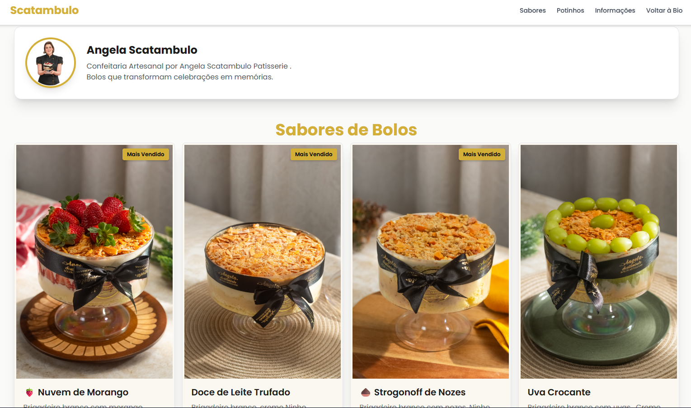
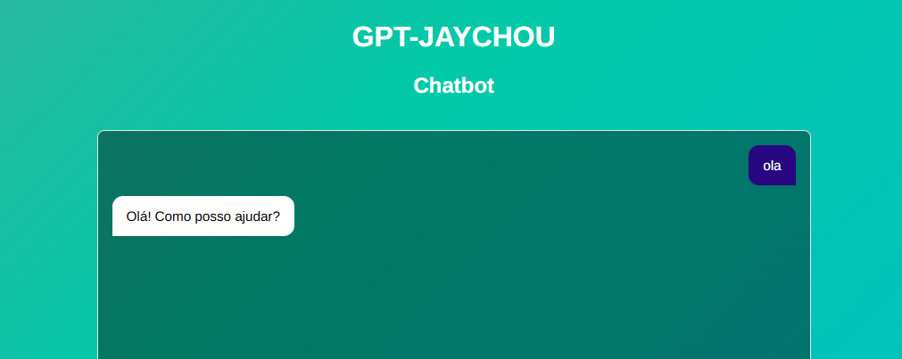
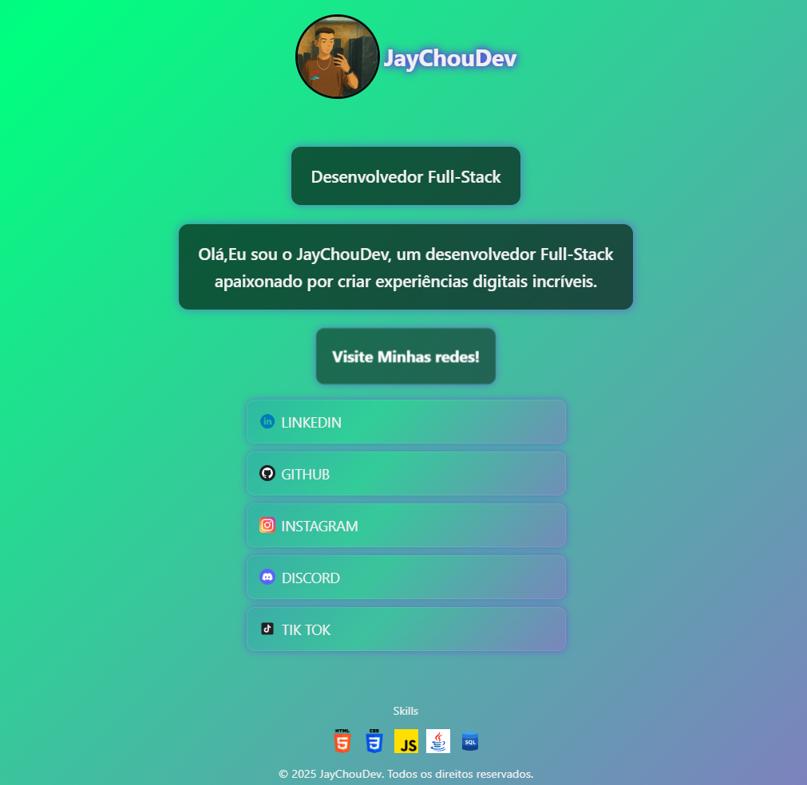
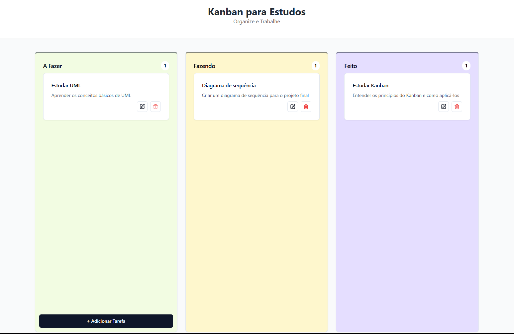
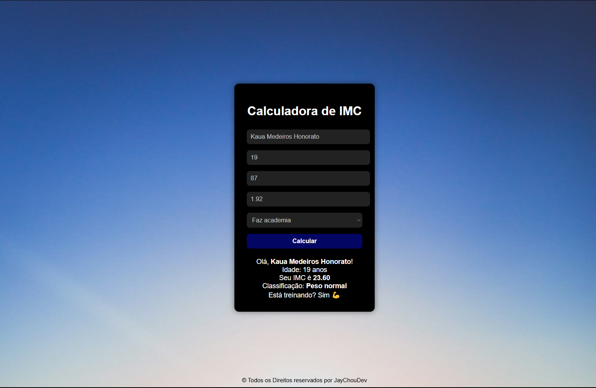
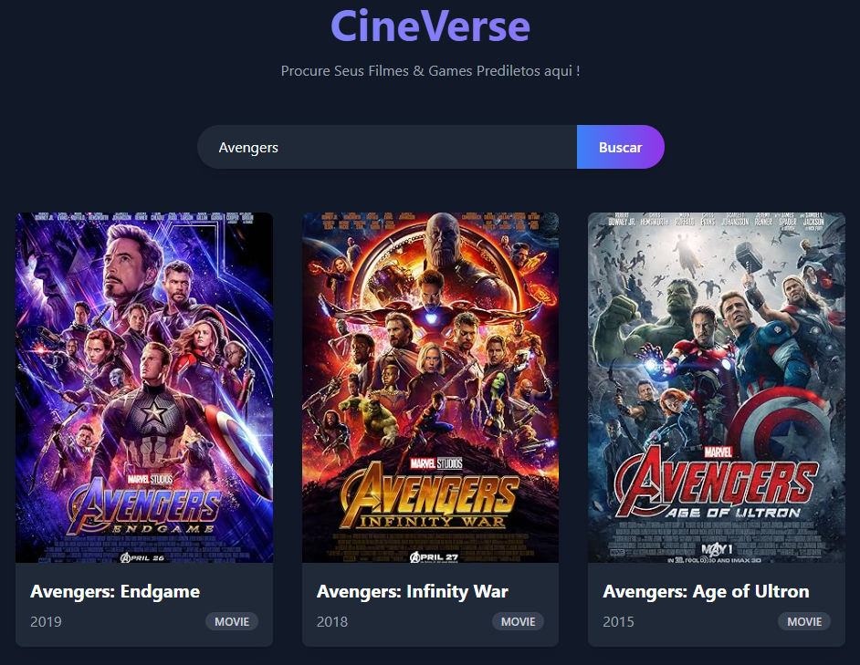
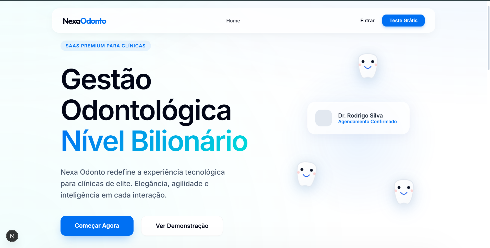
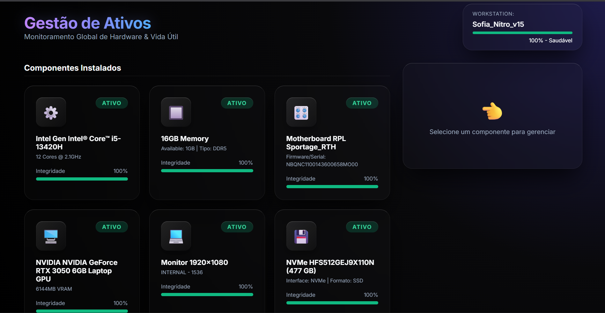

Meus Projetos Pessoais

Site E-Commerce
Projeto feito com Html, TailWind, JavaScript

ChatBot
Projeto com API da Punter

Mini Portfólio
HTML & CSS puro

Kanban
Organização de estudos

IMC
Validação de dados em JavaScript

CineVerse
Uma interface que busca Filmes, Series e Games

Nexa Odonto
SaaS de elite para gestão de clínicas odontológicas

Management
Cálculo de conforto ambiental para arquitetos e engenheiros